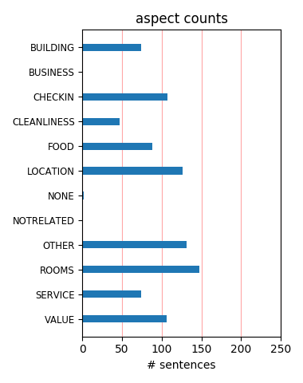
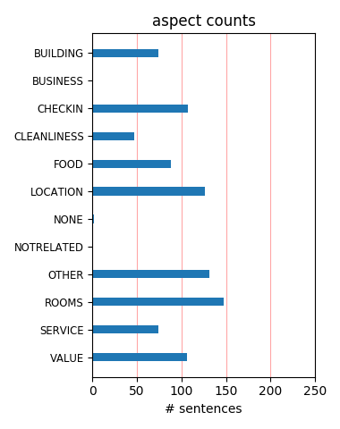

The staff was very accommodating. The room was exceptional - modern, clean, excellent view of harbor, comfortable bed, coffee/tea in room, 6 blocks from our cruise ship dock, we could walk to everything, excelletn location, we would stay here again.
This hotel gives you exactly what you would expect from a Marriot however is far too overpriced. You have to pay for internet which is disapointing too. The hotel service is great though and the food is too. The hotel is also a little further out of the way.
I cant believe i got this for 50bucks a night on priceline. Its basically all you expect from a 3and a half star hotel. pool, sauna, training room was excellent along with security. It was a little far from the cheepie restuants and the subway. Great views and service.
We happened to be in Vancouver on Canada Day. The Renaissance was perfectly located to experience all the Canada Day events and when it came time for us to leave on our cruise - we walked to the cruise terminal. Staff was very accommodating to our last minute requests.
Hotel was very clean and upscale. Views of the harbor were fantastic, close proximity to pubs downtown and other eatery's. Being very close to the conference center was a plus. Restaurant could use some work on the service side but other than that everything was great. Highly recommend.
The rooms are good, the service is good, and the prices are reasonable. I decided to choose this hotel following previous reviews on trip advisor, and I wasn't disappointed. I would recommend this hotel to my friends. Vancouver is a really nice city, and this hotel is pretty well located.
I stayed here over a weekend in June. The staff were very friendly and the room was good (oddly shaped though). My friend would be upset if I didnt mention the parking though. It's hard to see how to exit signs in the parking. They dont have big signs but those small exit signs by stairways!
High End Hotel with excellent service, great food and incredible view of the bay. It is located near the floatplane "airport", which doesn't cause any trouble due noise. The location of the hotel between Stanley Parc and Gastown makes the exploration of Vancouver Downtown easy, by bike or by foot.
Great hotel overall. Secure, very clean, safe and great value for money. I would rate it equivalent to any great hotel in Vanc for much lesser price(Check for promotions) and if you are a regular, they would upgrade you to a harborside. Good resturant, easy access to everywhere, highly recomended.
We really enjoyed staying at this hotel. The location is very central and has beautiful views of the harbour. Unfortunately there is some building work taking place in front of the hotel but still the view is fantastic. We found the hotel staff very helpful and accommodating. Rooms were spacious and modern.
The Renaissance Vancouver is an excellent hotel. The service was superb from the time we checked in until the time we checked out. The staff were very helpful, took care of all of our needs promptly. The location is great in the heart of Vancouver only 2 blocks from the harbor. The views from our room were tremendous.
We had a great harbor view room during our short stay in Vancouver. It was within walking distance of downtown. PROS: 1. Wonderful view with early check in 2. Ease of navigating the city, dinner reservations 3. The bellman rapid and courteous service 4. The service from the waiter for the wonderful breakfast buffet. CONS: None
We stayed at this hotel for a conference. We had a harbourside room, and the view was breathtaking. The room is very clean, comfortable and modern. The fitness facilities are great too, very well equipped, and little touches like fresh fruit in the fitness center are the kind of attention to detail that make a hotel stand out.
This hotel is on the waterfront facing the seaplane terminal. Get a harbor view room and the view is good. Stanley park a short distance away and close to cruise terminal.The rooms are a good size. food is very good.Staff very helpful.The only down is if you haveyour own car it costs$19 every time you go in and out the car park.
The view from our room in the Renaissance overlooked Coal Harbor and Stanley Park. We enjoyed watching the seaplanes take off and the various water traffic. Far off we could see the mountains. Our room had the classic Renaissance features and quality. The breakfast was worth getting up early for. Wished we could have stayed longer.
Beautiful hotel and in a great location. We had a room that overlooked the water. However there is a lot of constuction going on, so soon they will lose most of that fabulous view. We spent about 3-4 hours at the revolving rooftop restaurant one night. That was one of the highlights of the trip, and a definate MUST if you stay there.
We arrived at 8am, following an early morning departure from an Alaskan cruise, given a warm welcome by the receptionist and advised our room was ready. Great to be able to relax for a couple of hours before exploring Vancouver. All the staff very helpful and efficient. An excellent location for downtown Vancouver and the harbour. Excellent stay.
The hotel is overall nice....however if you have a higher vehicle or are renting an SUV chances are it wont fit under the low undercover parking and the closest alternative parking is expensive...the rooms are deffinately not sound proof as you can hear the conversation of people in the hallways rooms next to you etc other than this it's a decent place to stay
We left booking a hotel in Vancouver to the last minute, and so kinda rushed our booking into this hotel. It turned out to be a great choice - nr downtown, an ocean view room, nr the float planes (essential for that trip to Victoria!) and with the most helpful staff! The construction work didn't bother us too much, although I do wonder what will happen to the great views!
We stayed here for a couple of nights on a weekend trip from Vancouver Island. The whole experience was great from the upgraded harbor view room to the staff. This is the first hotel I have been in that caters to the techno geeks. They had loads of plugs built into the desk for all your techy toys. The room was was large and very clean with all the modern amenities. Would highly recommend.
the hotel lobby and bar were very nice but the bedrooms on the city side could do with tripleglazing as the noise was unbleivable we might as well have been sleeping on the street! If your looking for peace and quite this is not the hotel to go to,espically when your put into a room next to generaters. linen on the beds should be changed more frequently because there was a stench of them,they could do with whitning powder!
Well the hotel was superb in every way. The staff caring, friendly and polite. Room was just so perfect, overlooking harbour and float planes. It was my 60th birthday, and they made it soooo special, we cannot thank them enough. Hotel spotless throughout. The best variety of breakfast , and such happy staff. We will deffinately stay here again. If you want a great stay and location, and want to feel special, then stay here. Wow
Stayed at the Renaissance Harbourside for three nights. I had a 15th-floor room with one king bed. Room had lots of space, with a couch and plenty of storage. Great showerhead. Had buffet breakfast. Eggs benedict were delicious, along with waffles and french toast. Service was excellent, and housekeeping was very efficient. Only bad note goes to the fire alarm with went off two nights in a row, making the elevators work on and off.
This hotel is situated in an ideal location for wandering around the harbour, with all the associated sights and sounds. The room we had was very comfortable, and since it was angled toward the street, we had a great view down the street towards many of the skyscrapers in Vancouver. Our only - not really a complaint, just an observation - is that the doors to the rooms are not as tight as in other Marriotts, which allowed some hallway noise into the room.
I have stayed at the Renaissance in Downtown Vancouver for 40 nights in 2009 and 70 in 2010 (so far). I have come to rely on the consistant quality of this hotel, it's restaurant, lounge, and the nearby facilities. The lobby restaurant is wonderful - though pick the Tenderloin over the Ribeye. Every night there is a 9pm shot from the cannon at Stanley Park to the North. I would recommend walking to the Olympic Torch across the street to get the full effect of the echo.
Very nice view from our hotel room afforded us the colors of sunrise set against the majesty of a mountain range to and the goings on of a bustling sailplane business. We are Marriott concierge members so were able to avail ourselves of the 19th floor Concierge Lounge. Very nice hosts up there and when we did dine at the main level buffet it was also pleasant. Room is somewhat dated, but very clean and comfortable. We really enjoyed the complimentary jogging maps -a nice touch.
Older hotel with makeover, No bathrobes, no wine glasses, paper coffee cups, lack of furniture in room, only double beds if wanted a king it would have been $30 more, front desk would "not" compromise, parking advertised at $23 a day but with taxes over $31. We did get a good price booking through the internet but does this mean you should receive less then average service. I will not make this mistake again there are plenty of good hotels in Vancouver that "do" want your business.
Spent 2 nights in a harbour view room. Room was fine (though had to call for a shower curtain), nice view (though obstructed by an apartment tower), and good, but not great location. The aspect that sank the hotel for me was the poor internet connection, both wired and wireless. Have seen the same issue at the Vancouver Airport Marriott: intermittent, very slow connection. It took me hours to synch my email. On that basis alone, I would not recommend this hotel to business travelers.
Booked a great rate through one of the bidding services. When we arrived, they initially gave us a room directly above a band playing for a special event, right next to the swimming pool entrance - however, when we complained, we were promptly given a room higher up. Excellent attitude by the staff, good amenities (pool, workout facility, restaurant, and parking on the premises), and a clean room all added up to a great stay. Could walk to Robson Street. Wish they had a fan in the bathroom.
The hotel is in a great location just a couple of minutes walk from the convention center, and its harbor view rooms look out across the harbour. Our interconnecting rooms were spacious, and the beds were really comfortable. We had a very pleasant dinner one night in the hotel restaurant, and enjoyed the breakfast buffet and coffee machine in the Club lounge. The staff were all friendly and helpful, and we got some great sightseeing advice from the concierge, Alex. Will definitely stay here again!
I've stayed at this hotel twice. First time I had a city view, which was nice. Second time I had a harborview. Nice to look out and see the seaplanes land. With the construction across the street, the water view is partially blocked. Both rooms have great beds and nice linens. Wallpaper is an odd blue star patern, but oh well. None of the interior seemed to be the same (wallpaper, chairs, curtains, etc but the bedding was the simple white). Didn't eat at the hotel. Pool area is nice. I would stay there again.
One night stay due to the Marriott Pinnacle being fully booked for my last day in Vancouver. Just across the street, so I was at the front desk in seconds. Efficient check in and got my room immediately despite being early, nice room with view of sea. Slightly tired decor, but clean and comfortable. Seems to be more of a tourist hotel than the Pinnacle, lots of coaches so if you are unlucky it could be a long wait to check in. Room rate was very high for the quality of accommodation on offer. But no real complaints.
Renaissance Vancouver Harborside is a great hotel for stay in this dynamic city, 2 blocks away from shopping, restaurants, museums and the harbor. This is our 2nd time staying at this hotel, both times, we got a harbor view room on upper floors on the corner, the view is simply gorgeous. The hotel staffs are very friendly and helpful with suggestions on sightseeing, restaurants and cultural events. It is a pity though that more and more of the views are obstructed by the high rising condos between the hotel and the harbor.
I often stay here for business as I'm a Marriott Platinum guest and need to keep points up. This hotel is clean a d very well situated in the downtown core. If traveling on a romantic weekend - as another reviewer was - you could do better by staying at an independent niche hotel or go all out for the Four Seasons or try the newly renovated Hotel Georgia which has excellent art deco finishing. The Renaissance has good! Well equipped rooms with desks! Internet and flatscreen TVs. Breakfast buffet is very good with lots of choices.
I stayed here while attending a convention at the Vancouver Convention Centre. Overall, my stay was fine, but considering the cost of the room, I have had better value elsewhere in Vancouver. Pros: -Nice view of the harbor -Clean rooms and lobby -Comfortable bed -Nice workout facility -Aveda toiletries -2-3 block walk to the convention centre -In-room coffee maker Cons: -Cost of in-room wifi (internet access was free in the lobby and I was actually able to carry the signal back to my room (I was never charged a fee :)) -Small rooms
The location is wonderful, the hotel is nice, clean and beautiful. I thought the service was excellent from the Concierge to the front desk. I work for Marriott and they didn't know it, but still went above and beyond. The fitness equipment could use some maintenance. I would definitely recommend eating breakfast and the Urban Market next door. Amazing omelets (plus potatoes and toast) for $10.00! We ate there everyday. You can also pick up sandwiches and snack items if you hit the hiking trails (Grouse Grind is a must if you want a workout).
I must start out by saying that the staff at this hotel is awesome! The hotel itself is VERY tired and the guest rooms and hallways need desperately to be updated. The very obviously updated lobby and bar area is beautiful. There were long black hairs stuck to the ceiling in the bathroom that remained my entire 6 night stay - and what appeared to be a pubic hair on the side of the bath tub when we checked in (which I removed myself.....ewww) The food in the lounge is pretty good and again, the service outstanding. would not go back to this hotel.
The hotel offers beautiful views of the waterfront and the rooms are spacious and relatively modern. I found the staff to be less than friendly and not very accomodating, particluarly the staff in the restaurant. If traveling for business, this hotel is not a great option. Lack of a business center is problematic if you need to print anything. Hotel turned former business center into a small shop leaving guests forced to share two computers and one printer located in the lobby - which means you are often waiting on someone to finish checking email.
Great location for venturing into downtown Vancouver. Close to the Canada Place and Convention Center Piers - about a 5-10 minute walk. Great views of the harbor, water airport and Stanley Park. The hotel was clean, the service was good and it was a great home base for us. We didn't really take advantage of much in the hotel because of everything offered in downtown Vancouver. One thing I could have done without was the guy who owned the little lobby shop. Every time I went in there he tried to upsell me on something - mostly I just wanted gum or water.
First visit to Canada and stayed at this hotel before and after going on Rockie Mountain Tour, thought it was in a great location, easy to get to and find everything. Found the staff very polite and helpful. Rooms very spacious and the beds very cosy and comfortable. There is some building work going on behind the hotel, but with the preparations for the 2010 Olympics going on it is difficult to find anywhere that doesn't have building in progress, we were not affected by any noise at all and would definately stay there again, and recommend it to everyone.
stayed for 2 nights and had one of the best beds after a 23 hour trip to relax and get some well earned sleep.The restaurant was excellent with a good quality menu and excellent service and staff, compared to a lot of big brand hotels this represented great value for money for those wanting a 4-5 star hotel.There is a chinese restaurant called the oriental which is located on the corner near a pub only 60 metres from the hotel absolutely brilliant food if you are a chinese food nut like me,...seriously as good as it gets and i have been to most all around the world
Apon arrival we received a room with a cityview. There was an air conditioning on the other side of the street that was quite disturbing. We complained the next day asking for a more quiet room and got the most perfect room facing the habour. It is absolutely worth it to book a room with habour view. You can see the sea planes take off and land and have a beatiful view on the ocean and Stanley Park. The beds are just great, you sleep like on a cloud. There is construction work going on but this is not disturbing at all. I can totally recommend this hotel to anyone visiting Vancouver!
I stayed here in December 2007. I had a room with 2 queen beds and a great view of the harbourfront. I could watch the sea planes take-off and land... This was definitely a highlight, and I found it very amusing! The beds and bedding were very comfortable and I truly enjoyed the burger I ordered from room service. The staff is competent and very knowledgeable about the town. The desk agent spoke to me in Portuguese, and was able to provide me with very good input on activities and things to see during my visit. The hotel is clean and comfortable, and I will definitely return some day.
We stayed at this hotel after a Holland America Cruise. The room here was HUGE in comparison to the boat, but it was also on the 14th floor with incredible views of the Harbor, part of Stanley Park, and the Seaplane terminal. Room was clean and comfortable, best bed on the entire trip! Service was also top notch. This place may be in the geographic shadow of the impressive Pinnacle Hotel, but it was top notch in every respect. Friendliest Hotel staff ever for such a large hotel. One small reservation, the lobby is very noisy much of the day and night, and there is no quiet area to use the free Wi-Fi in the lobby and do some work.
We stayed at this hotel for 4 nights in a 17th-floor room facing the harbour. Check-in was quick and efficient, the room well maintained and clean. Our request for foam pillows was promptly fulfilled. As mentioned in other reviews, there is construction in front of the hotel, and seaplanes start and land frequently after 7:30am on weekdays. While the extra windows on the balcony do a pretty good job of minimizing the noise I would recommend bringing earplugs if you are a light sleeper and if you are planning to sleep in. Once you get up, a terrific breakfast buffet awaits you. We managed to get an excellent rate and really enjoyed our stay.
Stayed here pre-cruise (out of Ballantyne) on points. We walked from the new Canada Line and was a little more of a hike than we thought, but if you are active, it should be fine. Checked in to find that we had a room with gorgeous view of harbor, Stanley Park and a little glimpse of the Lions Gate bridge. Loved the decor in eclectic reds, golds and blacks. Room was clean and beds were comfortable. Had the buffet breakfast in the morning and it was VERY good and the setting was so beautiful. We walked to Granville Island from here (quite a walk) and Stanley Park to rent bikes. Would stay here again in a heart beat! Great way to start a phenomenal vacation.
Trailfinders booked us here as part of our Canadian tour before joining a cruise to Alaska and we were very pleased they did. From the moment we arrived the staff were extremely professional and helpful. The rooms are of an excellent size and the view of the harbour is stunning. One way from the hotel you are within easy walking distance of the cruise terminal which is just next to Gastown and the other way is a beautiful walk along the waterfront, past the marina and into Stanley Park. The buffet breakfast was excellent and the concierge very knowledgeable and helpful in organising our trip to Grouse Mountain. Thank you for making our stay most enjoyable!
Stayed here on Dec 3, 2008. This is a nice Renaissance with harbor views. I booked a harbor view room and was given a lovely corner room on trhe 8th floor. While the hotel is not right on the water (there are a few condo buildings closer to the water) I was still able to have a nice view. The workout room was under repair during my stay, but they let guests use the Marriot workout room which is across the street. I can also see why this hotel is popular with cruises since the location is close to the terminal. I didn't eat on site, but do recommend Joe Fortes Seafood and Chop House. Vancouver is beautiful and I can't wait to return in January for my next business trip.
That was the worst New Year Gala ever...! My girl friend's Jacket and her keys got stolen, we got push several times by crowd and security, the coat check was disaster, people took any jacket they liked...! and then we asked Hotel Rep to get us a Taxi since my girl friend didn't have any coat to wear in -7 dgree outside, which took more than 2hrs to arrive. During this 2hrs we had to seat in the hotel cold lobby where we witnessed several drunk people vomiting and swearing. They didnt even get us a cup of water...! I am pretty sure lots of these guest weren't in age range that was claimed 25M/21F...! "Thank you Renaissance and Icon Nights for ruining our New Year night"
This was the first hotel we stayed at during our tour from Vancouver to Calgary. We upgraded our room to the harbour view and it was worth every penny. The views were amazing. Out of all the hotels we stayed at in Canada this was the best. The room was really nice the bed was really comfortable. The only downside of the this hotel is that you have to pay £10 (just like any other city) per night for parking, however if you are staying in Vancouver for a few days, just get a taxi from the airport. During our 4 days in vancouver we only used the car once. There is some building work going on in front of the hotel so I dont know what the views will be like once this has been done.
I stay at the Renaissance usually once a year, and I've to say that as much as I enjoyed it 4 years ago, today it's not the case anymore. The hotel's location on the waterfront is really cool (nice view of Grouse mountain). Ask for a high floor and the waterfront for the view and the noise of the water-planes that take off/land in the early morning. There's a new row of building being built between the hotel and the waterfront, and it's been going on for years (i.e. noisy all day long). The hotel itself needs to be refreshed. It's becoming really oldish and the room rates don't match anymore with the quality of the hotel. Breakfast is good but the menu hasn't changed in years.
I spent the 4th of July weekend with my husband and we had a marvelous time. The room package came with a free companion ticket and free hot breakfast. We arrived late and had dinner at the restaurant, the server was very friendly and attentive to my special needs ( I try to avoid too much sodium when traveling).... The Halibut dinner was excellent and my husband ordered the filet....delicious!! The room initial room was very small, but I realized we were in Canada, but they promptly upgraded us to a harborview room so the large patio window made all the difference...although no chairs available to sit on the balcony..... I would definitely come back when visiting Vancouver again....
We booked our room on points at the very last minute after having travel issues with returning to Calgary from a long trip to Nepal. This place was exactly what we needed - great bed with great linens and 6 lovely pillows. It was quite and clean and we woke up to a beautiful view of the harbour in the morning. Globe and Mail was provided in the morning. Aveda products are provided as well. Nice tea and coffee are also provided. Shower was hot and amazing. Desk and coach provided. They also let us have a late check out - 2 pm. Wifi is crazy expensive at $16 per night... not sure why they charge when the Starbucks around the corner is free. The bathroom is a little small for this type of hotel.
My first visit to Vancouver, British Columbia was exceptional. Upon entering the hotel, we were treated with personalized courtesy from the bell captain to the lobby staff. The front desk lady greeted us by name and went out of her way to accommodate our room preference. The harbour views were breathtaking and exciting. Even though, there was constuction taking place near the harbour it was negligible to the serene water views we experienced. We stayed on the 10th floor on the right side facing the water. The view of the harbour is better toward the right side. The construction is necessary so that city of Vancouver can prepare for the 2010 Winter Olympics. Yes, we definitely would stay here on a return trip!
Renaissance Vancouver Harbourside Hotel The hotel is very nice located, near you will find nice restaurants , delis and one Sven eleven. Our room was fine, and great bed 6 lovely pillows. It was quite and cleans room and has a beautiful view of the harbor (though obstructed by an apartment tower). Bathroom is a small but very clean having Aveda products , the shower was hot and amazing. Globe and Mail was provided in the morning. Breakfast buffet was superb - TONS of fresh fruit and anything else you could want. Quite expensive 26 dollars each. Wi-Fi is crazy expensive at $16 per night... not sure why they charge when the Starbucks around the corner is free. The bathroom is a little small for this type of hotel.
This was our first trip to Canada and we stayed in the Renaissance for two nights and again two weeks later for one night before we returned home. Our room was lovely and the bed was the most comfortable we had ever slept in!. The only downside was that our first room looked out onto other buildings and it was quite noisy from airconditioning units, however, we upgraded to a harbourside view on our last night and this was quiet and the views were gorgeous. Unfortunately there is building going on directly opposite and the view will be affected. We would definately recommend the Renaissance, the staff were all extremely friendly and provided a first class service. The food in the restaurant was superb and the location was perfect.
I booked this hotel through Priceline for $64 a night. What a great deal! The hotel appears to be recently renovated and everything worked out well. I saw that some people were complaining about the cost of parking or the internet, but if they had a clue about anything, they would know that all of the comparable hotels in Vancouver charge the same prices. (Hyatt, Delta, Marriott, Sheraton) and I have stayed at all of them. This hotel is right there in the same class. My complaint would be that the hot tub is tiny, there was a family in there so we went back to our room watched a movie instead. The gym was big though. Also there was an alarm that went off in one of the rooms for 45mins, we called down and someone came up to switch it off within 5minutes.
Good Location if traveling for business or you have a car! Got this hotel thru a discount travel company and paid $65.00 american a night. Excellent deal at this price. We had a terrific view from the 16th floor. Unfortunetly the view is going to be partly blocked with yet another "Glass tower" going in. The room was spacious and clean. No tub in our room. Bed was really hard and needed 4 extra pillows. The TV was not working properly. room felt sort of dated in interior. Hotel itself was very clean and so were the amenities. Front Desk staff very nice. Very unsatisfied with long distance calls to USA. Was told one rate and got billed $$$. check out staff, smiled and said thats the rate. Unacceptable. Woould stay here again in the future. -) Happy New Year!
I was staying here for business. I thought the hotel was very nice. Bed was very comfortable. Gorgeous view of the harbour (what you can see past the towers in front of you anyway) Residential neighbourhood mostly, so quite quiet. Easy to walk to most shopping on Robson and Granville Streets and the liquor store is only a 1/2 block away. Nice to have a glass of wine in my room after work. The heliport is a very short walk. I thought the front door staff on the most part were friendly although a few turned away when I made eye contact to say 'hello'. They have an amazing gym. Really top notch. Gorgeous indoor pool and hot tub too. Only complaint is that there was no signage for the underground parking. Had to go around the block 3 times before I finally found it.
I stayed here for a weekend getaway with my wife. The rooms are small (for a "4 star" hotel at least) but clean. Very quiet for an inner city hotel, double windows keep out the noise. The free gym and pool are nice perks. No real complaints about the facilities, just the price/rating. I booked through Priceline and snagged a room for $85. After winning I went to the hotel's website and checked what the regular rate is- about $280! So I thought I hit the jackpot by getting it for $85. When we arrived and I saw the room, it was much closer to a 3 or 3.5 star, $150-$180 a night hotel. So I was still happy with my rate, but this is not a 4 star hotel by any means and it kinda put a damper on the weekend. If you stay here DO NOT pay retail price or you will be disappointed.
I'll have to agree with the last poster from Minneapolis that the hotel is a bit old, but the service and amenities are terrific. I am a regular Marriott Platinum Member (75 + stays per year) of this hotel and I really don't think outside variables such as construction can affect service. I guess people will always see things the way they want to see it. I could see things such as "bad weather", pollen count and full moons would bother this type of traveller too. I am there on a weekly basis and the staff are always cheerful and willing to help. Unfortunately, hotels are not a fantasy land where the rain, traffic etc will suddenly disappear but I can assure you that the smiles will always appear. Everyone has the option when they wake up to be positive or negative. I'm sure you know what my choice is.
This was my first trip to Vancouver and our stay at the Renaissance was the highlight of a wonderful trip. THe view of the harbor was to die for!!! It was heavenly waking up to such an amazing view of the water and turning in with a lovely view of the sparkling city across the way. Each day we would return to the hotel after hours of sight seeing and the view was so breathtaking I think would have been perfectly content watching the planes land/take off from the water all day long. Besides the view, the bed was absolutely divine. We were in Vancouver in September and it was slightly chilly but the heated floors of the bathroom was a great touch. There is nothing I would change about this hotel or trip. THe staff was very polite and helpful, esp in organizing one of our excursions to Victoria Island. We definitely stay here again.
I reviewed this hotel before, and found a few issues, but things have changed a bit....We stayed here with some friends during a long weekend and found the room upgrades to be very nice. Yes, it is the same hotel that now has a building blocking those wonderful harbour views, but it is still a great place to stay. We called while waiting at the border, and were given the internet price right away with no dickering. We were greeted at check in with the usual warmth we have always found at this hotel. The big suprise was the room remodels. They have done a nice job. I also think it is worth mentioning the restraunt downstairs. If you want a truly hassle free, great breakfast, thats the place. I usually stay clear of hotel eateries, but the staff and good food make it a real bargain....Kudos to you Marriott. You have dazzled me again...
My husband and I picked this hotel as it was a little away from the noise and bustle of Robson/Granville Street and we were not disappointed. Fantastic views from our windows overlooking the harbour and Grouse Mountain. What a way to wake up every morning. The staff could not do enough for you, especially the reception staff who were extremely helpful. Very clean and had a great pool and jacuzzi which was great for those weary bones after walking around Vancouver all day. I would not hesitate to recommend this hotel again. Only thing is that another hotel is being built nearer to the harbour and in front of this one, so I wonder what the views will be like once the new hotel is built. Easy to walk everywhere from this hotel. Also very good was the business centre they have for residents which means you can use internet for free. Great idea.
Great place. All staff we interacted with were welcoming and friendly. Room was beautifully decorated, modern, and very clean. Our visit started off nicely when we arrived at 10am, expecting to be able to just drop off our luggage until we could check in later. Without us asking, they quickly put us into a room. We had a great view of the city and the harbor, which made for nice viewing at sunset and sunrise. The location is great, as it is close to much of the action in Vancouver. Stanley Park is just a few minutes' walk away. Dinner at the restaurant was good, though like most hotel restaurants, pricey for what it was. A nice touch was the wheelchair the hotel has to loan guests (no charge), as my wife had just broken her ankle a week before. While the wheelchair was hardly top-notch, it did greatly increase our mobility. I recommend this place.
I travel a fair bit and am experientially weathered with the offerings of various hotels around North America in particular. I stayed at the Renaissance Vancouver and was initially put off that they were undergoing renovations to their lobby. However my chagrin soon changed when I was attended to chivalrously and promptly upon my arrival setting a standard that was maintained througout the entirety of my stay there last week. I spent a great deal of time at the entrance admiring the awe-inspiring art pieces that they have on the walls. I have never seen anything like the illuminated art work displayed. My inquiries revealed that Ron Sombilon, a local Artist, is the exhibitor. I commend wholeheartedly the Renaissance Vancouver for recognizing and nurturing their local talent. I will definitely make this hotel my first choice on my next trip to Vancouver.
I choose this hotel over the newer Marriott which was across the street from the Renaissance because I wanted a harbour view from my room. The view was limited due to a new high-rise being constructed between the hotel and the shoreline. This was not a major upset as we still commanded some pretty nice views but the room was well-worn and outdated. I normally have room service once or twice but the menu was very limited as were the availability of the restaurants in the hotel. We ate at the buffet for breakfast which was pricey for what was offered. Service was very slow if you ordered anything from the kitchen (e.g. an omelet). Also, the overall ambiance of this hotel is 'dark'. I am use to brightly lit lobbies, corridors and rooms. This was not the case here. I would not recommend this hotel given better choices nearby such as the new Marriott across the street.
The Hotel from the outside looked old and Shabby far from the pictures posted on the web site. Check in was not a good experience it was 3 times befor we could get a key card to work to get into the room and on and on. The Restaurant looked nice but did not live up to the expectation.food was not good ,service was slow.20 minutes after coming into the restaurant we actually caught our waiters attention and it was not even that busy. Breakfast buffet was sub standard food was not fresh. Dinner promised to be something nice. It was not it was really just average compared to alot of other places near by this P2B restaurant is poor . Rooms were smaller than we expected .Did not like the dirty bathrooms and garbage in the side drawer made me feel dirty. Parking was excessive Internet was expensive 17 dollars for the day and we wee only on an hour All n all thiss is a low 3 star at best .Go elsewhere for a better experience
The hotel is well located close to the harbour, shopping on Robson street and walking distance to Stanley Park. When we checked in we inquired about the fitness facilities as advertised on the web site. We were informed that they were closed for renovation but we could use the facilities at the Marriott accross the street. Had we known this in advance we would have booked our room at the Marriott. Our room was recently renovated, spacious and with a city view. We found the rate for parking to be a little pricey at $21 per day. We went down for breakfast and were seated quickly but ignored for almost ten minutes without being offered coffee. The breakfast buffet had limited selection and was overpriced. When I asked for a newspaper they informed I would have to go accross the street to get one at the gift shop in the Marriott. There are lots of choices of hotels in this price range in this area of Vancouver. I would not stay here again.
Stayed at the Renaissance in downtown Vancouver while working a trade show at the Vancouver Convention Center. Overall the rooms were very nice and well appointed and the hotel staff was very friendly. Unfortunately during our stay there was a party for Persian New Year and the vibratiions and noise could be heard throughout the hotel during the night and very early the next morning. Being in the travel industry (I work for a CVB) I understand how much revenue those events provide but what I don't understand is why a more reasonable time limit was not placed on the music. When I brought it up to the hotel staff the next morning they said they had received a number of complaints from guests and were very sorry. Here is an idea to avoid complaints, turn off the music at 12:30. Had the party not been going on I would definitely have reccomended this to other business travelers. I think next time we are in the area however we will stay at another property.
My wife and I stayed here for a quick weekend getaway. Considering the great deal we got through Priceline, the hotel was excellent. We arrived three hours early, and when I asked them if they could check our baggage in so we could tour around Vancouver, they did us one better and got us room without delay. The common areas were very clean and well-appointed. Where the hotel loses clout with me is in the size of the rooms. For a four-star, it seemed the rooms were very small, and the bathroom was downright claustrophobic. The bed was very comfortable, though, and television programming was plentiful (which was nice when we were taking a break from walking around town). In-room coffee was very good. If you want Internet, it is nearly $16 CAD per day! Which was tough, because I had to do some work. To summarize, though, the hotel was excellent for the Priceline bid we put in. I would have been less thrilled if we paid the off-the-rack rate of $170-200, given how small the rooms are.
We booked a trip to Vancouver at the last minute and could not get into the hotels that had been recommended as the "top" hotels in Vancouver. The picture of the hotel on the hotel web site was not very attractive. We were also concerned about the construction noise mentioned in other postings. We were a little apprehensive about this hotel. We went with this hotel because they guaranteed a waterview room/king bed/nonsmoking and the price was reasonable. The hotel was fantastic!! By far the best view and location I can imagine. After days of walking around the city I think its overall location is the best. We looked out our large windows and saw the harbor, seaplanes taking off and landing, boats, and mountains beyond. Incredible views and a very comfortable bed. The room was extremely quiet. The construction, mentioned in other postings, is past the pile driving phase and so noise was not an issue at all. All hotel personnel were kind and helpful. I recommend this hotel to anyone.
This hotel has a great view and is located in a continence location. The pool and gym are very nice. The room is not too spacious but it is still a good size. The bathroom is kind of small but at least it is clean. The parking is terrible and super expensive. The customer service is poor. Our bath tub didn’t drain very well the first night we stayed. We told the front desk in person and asked them to fix it the next morning. However, the bathtub still did not drain well the second night when we showered. Apparently they did not take care of the problem at all. I called the front desk about this problem again, but they told me there was no engineer stand by in the evening. However, we can just let the water over flow. I really felt sorry for the house keeper. This hotel really needs to improve their management. We got a good deal from Priceline so I was guessing that’s why we got a room with a bad tub. They definitely discriminate Priceline customers. Overall, the stay was not too bad for the price we paid.
I arrived after a long flight from London to a very friendly reception. I asked about upgrading to a waterview but decided it was too expensive. The reception clerk said I was booked for a king which was quite small, and would I like a queen double which was bigger. It really was a large room, two beds and a sofa. It also had two windows and a small balcony at the back from which you could see the water do I was delighted. The service was excellent in the restaurant and bar, and I used the free wi if in the lobby area. I only had breakfast once as a treat, but it is costly so I can recommend Moonpennies ( turn left out the hotel cross at lights and you will see it at next junction ) I didn't like the music in the lifts but that is a personal preference. the pool was very good too. It is very easy for the convention centre and the shops so I would say it's worth it. If you are a Marriott rewards person you currently get half price on entrees. I thought that the level of housekeeping on floor 6 was exceptional .
We stayed at the hotel because we were leaving the next day on a cruise. It was very convenient to the Canada Place cruise facility. Unfortunately, our ship left out of Ballantyne pier which is not walkable. The hotel is OK. It is completely non-smoking, which is a big plus. It was quiet. The building was secure, you needed a room key to get to your floor and then the doors were reinforced. The room was in good condition and we did not use any of the other facilities. On the negative side, the room was small, the bathroom smaller and the bed was not very good. Check in went smoothly. There was a issue with the price but it was resolved at the desk (they had not given me the AAA rate) but I had a printout from my travel agent showing the rate. The location is good. We went up to Robson Street. We recommend the Bread Garden right off it, the HON (House of Noodles) Dim Sum but could not recommend Moonpennies. All in all, I would give this a 3 1/2. For the amount of money we paid, I think that we could have done better.
this is a great, beautiful hotel with a great location. m husband and myself, with our teenage son, wanted a budget hotel with all the amentiees so when ama offered us the harbourside for 117.00 per night including all taxes we jumped for joy! this enabled us to have two rooms for all of us to enjoy and relax. ongoing pre-olympic renovations were a daily ocurance but did not disturb us at all. we were on a higher floor with unobstructed views coal harbor, walking distance to shopping and stanley park. we spent our mornings drinking coffee from room service watching the harbour planes landing and fed sea gulls from our balcony. the longest we waited for room service was 15 minutes, excellant by our standards. the staff sent up chocolate covered strawberries and a hand written note wishing u a happy 20th anniversary. the valets provided us with driving directions and ideas of things to see and do locally. i highly recommend this hotel and will stay here again. we travel to vancouver frquently for quick romantic week long getaways to escape the alberta snow.
This is our second stay at this hotel. We had an amazing thing happen to us here... Alex, the concierge was utterly friendly, with a prodigious memory (she remembered our group from 2 years back... imagine! people everyday at all times, and she placed us immediately). While visiting the acquarium, my 5 yr old lost her camera, and was very upset. The next day, we went to Victoria for the day (she booked an amazing tour by ferry and hydroplane) and we left a note asking her if she could call the acquarium to inquire about lost and found. Upon our return, we found out that not only had she asked, she sent a cab to pick up the lost camera, put it in an envelope and had it sent up to our room with her name on it (Little Ms. Duarte) and a smiley face... we were at a loss of words at her amazing courtesy and out of the way service. Needless to say our daughter was thrilled at having found her 1st camera (which Santa had just brought)... We will remember this trip with the wonderful way her camera was found, not as the trip where she lost her camera! Many thanks Alex, you made us very happy!!
Stayed for a couple of nights, midweek. Check-in was smooth and didn't have any issues. They didn't have king size available for me, so I had to take 2 queens. Didn't sleep too well due to 2 issues: 1. I woke up covered in perspiration ( I suspect they use one of those plastic mattress covers, and there is a heavy duvee), 2. pillows aren't as large and firm as I prefer. Desk chair was very poor. Could not lock it upright, and it would not raise as high as I needed to work at the desk. I'm 6 feet tall, but I was still working up at an angle to the desk. Sink/facet combo in bathroom is modern, but facilitates splashing. Had to wipe the counter constantly. Parking level for hotel takes a bit of driving to get to, and out of, but is convenient to the elevator. There is a safe in the room, and there large flat screen is connected to a panel of connectors on the desk, so you can hook-up just about anything to the television, like your computer, DVD player, MP3 player, etc. Patio doors open, but there is no balcony, only a railing. Overall, felt a little dated. Seems like it could use a bit of sprucing-up.
We went through Priceline and got a great deal. When we showed up, there was a problem with our reservation, but with patience on our part, it was resolved. I think dealing with the staff nicely led us to being assigned a room that overlooked the Harbor. It was beautiful. It was on a lower floor, however, so once the planes started up---pretty early in the morning---we could hear them. But once you were ready to get up, watching them take off and land on the water was awesome. They sort of nickle and dime you here. We wanted wine glasses in the room, and they charged us $5 for them. And if we didn't have such a great room, I wouldn't have been as happy with this hotel. The hallways were fairly beat up, but the rooms were brand new--this was pre-Olympics, it looked like the whole place was due for a makeover. This place was a zoo on Sunday with a whole slew of people staying here on pre-cruise reservations through a cruise company. The lobby becomes a disaster, with everyone downstairs with their luggage. Just know getting your car will take a long time. Not as nice as the Marriott Pinnacle across the street.
was here for 3 nights mid- Aug. Great location. Expensive food $23 plus for bacon and eggs?? Booked a 2 bedded assessible room and was told it was confirmed. When we got there I was informed it was either 2 dbl. beds with no assessiblity or 1 with a king bed and a chaise with assessiblity. I chose the king bed (I was with my 82 yr old mom and wheelchair bound sister. There is only enough room in the 'assessible' room to get the wheelchair in. Not enough room to get the chair around the room. The bathroom has grab bars at the toilet and in the shower/tub (if you need a roll in shower you are S.O.L)...Had to call twice for the extra bedding so I could sleep on the chaise . When I asked where a certain restrurant was I was told it just just a few blocks away (it was 8 blocks UP HILL and I was pushing a wheelchair). You get 1 towel per person, some days we had shampoo/conditioner and lotion, other days we had no soap ,1 shampoo and 2 lotions. The bed I was told was comfortable. I was woken up one night at 3am from the alarm clock in some other room. If you are not on the harbor side you get street noise till 2am.
Stayed a week and the location was perfect being right near the Congress centre, waterfront and shops. Average room with twin beds instead of a King. At least the beds were large and comfortable with good soundproofed windows. Sleep quality was good although the walls were not quite thick enough to drown out the coughing next door. The food in the restaurant was excellent and I was quite happy to eat there for various lunches and dinner as the menu changed during the day. Staff were always very helpful and efficient. Breakfast buffet had a large range of hot and cold foods and was well worth the cost. Internet service in room was both wired and wifi with good connections. Gym had a good variety of equipment and I did not have to wait for a machine at any time even when htere were a few people in the gym. 4 treadmills, 4 steppers, 4 bikes and various weight machines as well as free weights. Pool & spa looked good but did not try. No minibar in room but there is a shop in the foyer and a vending machine in the gym. Also, a 7-11 just around the corner as well as a Starbucks. Good choice in Vancouver with an easy walk to local shops.
First, the view was extraordinary. There is construction blocking part of the view, but staying in one of the western-most rooms still gives you a terrific field of view. Rooms -41 and -39 are in the western corner. Enhancing the view, is the fact that there is an enclosed balcony with a couple chairs. You can even open the window and get fresh air. Very nice. Downtown location is great. It's a nice part of town and it's not too far to walk to Robson street, Stanley Park, or along the waterfront. Not too many restaurants in the immediate area, so plan on going somewhere else if you want to eat other than in the hotel. There are nice ammenities to the room, such as the heated bathroom tiles and very comfortable beds. However, the decor is aging somewhat and I expected something fresher. It didn't take away too much from the week-long experience, but kept it from being an excellent room. The new construction does block the Canada Day fireworks completely, which are a little further up Coal Harbour. (Take note for 2008!) Ultimately, I would stay here again. I would hope that the rooms are rennovated before my next visit, but it wouldn't stop me.
Upon arriving in Vancouver, one day prior to our cruise departure, it was apparent that the hotel we had booked was not in a good part of town. Desperation set in and we hopped in a cab and headed back downtown to the Renaissance Vancouver Harbourside Hotel. Upon arriving, a young but very Professional and understanding Miss Amanda Bye listened to our plight and got us into an amazing room at a last minute special rate. She was extremely helpful and kind and in a world of not so great customer service, Miss Bye exceeding all of our expectations and turned a very bad first night in Vancouver into a very good one! The rooms and views are breathtaking, looking out over the harbor, the location is perfect, a few blocks from the Waterfront stop from using the SkyTrain from the airport and it's just a one block walk down to the waterfront itself where there is a plethora of restaurants and yummy eats such as gelato. The staff overall are very accommodating and the buffet breakfast is top notch. I would not hesitate staying here again on our next visit and I would hire Miss Bye in a heartbeat if I owned any type of establishment. Thanks again AMANDA!!!!
The accommodation is very good, but you're paying for it. Even with the group rate I paid $190 (CAN) plus room tax and VAT. However, I had a very nice harbor view. In room internet is $16 a day for 12pm-12pm access (not even consecutive 24hrs). There are two computers in the lobby with free internet for guest use. There are a few coffee shops and one restaurant nearby with free WiFi (if you have a laptop computer). Otherwise, the rooms are spacious and well furnished. The staff is very helpful and can provide good info for first time visitors. There is a very nice upscale market roughly one block west of the hotel called "Urban Fare". It's a good place to buy drinks and snacks for your room and also a pleasant venue for a casual lunch. There are several cafes and pubs within walking distance. Two blocks east on Hastings, you'll find the Elephant and Castle pub which shows Setanta Sports (for the European football fans). There is ample food, drink, and shopping within walking distance. Check out the travel guide provided in each room. At around $200 a night, free internet would be a welcome perk. Otherwise, this is a great place to stay in Vancouver.
We recently had to spend a night in Vancouver because of an early flight out of YVR. We found that it was cheaper staying in downtown Vancouver at a quality hotel than by the airport. Because the new Canada Line runs from downtown to the airport in less than 30 minutes for only $2.50 after 6 and weekends, it's actually easier than waiting for airport hotel shuttles. We paid $70 a night on Priceline for the Renaissance and was pleasantly surprised by the experience. We were there during the last weekend of the Paralympics and yet check-in was quick and the room assigned was roomy and comfortable. Unfortunately, I am a light sleeper and the first room was on a floor with noisy young people running between rooms. However, we quickly got another room without any argument and were told that if we were not happy with it, they would find us a room that would make us happy. It turns out that the second room was behind the elevator shaft so.....we were cheerfully given a third room. Luckily, the third room was quiet and comfortable. Five stars for the front-desk's cheerful and "make-right" attitude. Other so-called 4 star hotels should learn from this attitude.
We booked this hotel as a finale to our holiday & decided to go above our budget: I'm not convinced it was worth it. We had planned to stay 4 nights but because our hotel in Nelson was so awful we extended our stay by 2 nights to 6. The hotel wanted to charge us an extra $49 per night extra for ALL 6 nights for the privilege as was we booked these 2 nights by phone & not the internet! However, after some heated discussion we agreed to pay the extra for the additional 2 nights only which was still annoying. Don't be fooled by the tag "harbourside view": since the hotel was built the harbour has been extended & 2 years ago an appartment block was erected in front of the hotel partially blocking the view. Also, a second block is under construction limiting the view still further. We had specified a harbour view & the first rooms we were shown DID have a view but only if you can see round corners (needless to say we soon complained & were moved). The hotel is in a great location for exploring Vancouver & for taking the seaplane to Victoria. The rooms are spacious but have neither a fridge nor a mini bar. One recommendation is the restaurant on the ground floor-the food & service are great.
My husband and I booked this through priceline, thinking we'd be staying at a four star hotel. We were certainly impressed with the name, delighted by the deal and looked forward to the location. Upon arrival, the lobby was chaos with luggage strewn everywhere for a Coors Light/Maxim event...it felt like a frat house. Reception was chilly and the only time the desk clerk smiled was when she offered us a room with a water view for an extra $30 per night. Seriously? We went to our room to freshen up and were nonplussed. It was fine, but certainly not four star. The chaise lounge was stained, the desk was dusty and the bathroom was cramped at best. We took off to see the sights and returned later that evening to get ready for bed. Well...we didn't notice this during daylight hours, but upon closing our room door and dimming the lights, we noticed that we could see clearly into the hallway via spaces between the door and doorjamb. Not just light, but actual people passing by! On all four sides! If that wasn't enough, this also allowed quite a bit of sound to travel through to our room, and we heard every step, cough, door click, etc. all night long. We were SO disappointed! Good thing it was only one night!
Although this hotel has a great central location, there were several drawbacks including very small rooms (especially the bathrooms) and construction in the lobby. The rooms appeared to be recently renovated but we found it to be very tight for two people. The bathroom fixtures were fine but nothing special. We did have a nice view of the water however. As mentioned, there was construction in the lobby and it was an uncomfortable place to work on the internet (to avoid the steep browsing fees in the rooms). The business center had one terminal that was occupied and the concierge floor lounge was closed over the weekend so it was a small hassle to do some work. ATM machine was also broken so we had to walk down the street. The health club is very spacious and has a nice pool and hot tub but the room still has a cicra 1970s feel. We didn't take advantage of the restaurant but it at least appeared to have a nice ambiance. We were also recommended a "romantic" restaurant by the front desk..not a bad place but it was packed with large, loud groups of drunken 20 somethings where you had to shout to be heard three feet away (confirmed by online reviews we unfortunately read after the fact). Otherwise service was decent.
Stayed here for 3 nights whilst DH attended a meeting. The hotel is very central within easy reach of skytrain, Stanley Park, shops etc.. We had a good sized room with enclosed balcony and a great view of both the bridge and the harbour. Comfortable Marriott beds and bedding. The staff were courteous and efficient (brought luggage rack and chairs for the balcony within minutes) and check-in extremely quick. Some people seemed to have great difficulty with the elevator where you have to insert your room key before you press the floor number, but I think it is a good security feature. Internet access is around $15(+ tax) noon to noon, although it is possible that some room rates include the internet, and the parking is expensive (did not have a car but glanced at the rates) but it always is in big city hotels. The lobby is modern but IMO the rest of the hotel has exceedingly garish carpet and the rooms seem to have been designed by a committee which never met together. Bright striped carpedt competing with elegant navy pin striped bedskirt; Modern dark/light geometric headboard next to blonde wood table: yellow block wallpaper and matching sheers - very 70;s to me. We stayed here as a change from our usual hotel and found it very comfortable, however we will probably revert to our usual hotel next visit.
This was our second stay at the Harbourside; I'd been previously for a conference, when they were undergoing renovations in the lobby. We were staying this time for three nights to visit friends. We came direct from the airport, after flying up from San Francisco, and enjoyed (finally) taking the Skytrain right downtown. It was a short walk from the Waterfront station to the hotel. We had a room on a high floor, with a city view. The room was at the end of a hallway, and had a very interesting shape, with a large window. This meant the room was very bright in the mornings (when it wasn't raining ;-). We had a comfortable king-sized bed. Bathroom was clean and tidy as well. The room itself was extremely comfortable. The $15/day internet fee was pretty rich, but we weren't in the room much, and passed. We also didn't bother with breakfast; there are loads of places near harbourfront in Vancouver. All the staff we dealt with were friendly and professionally, particularly the concierge, who gave us good advice on where to go jogging. The only mild downside we encountered was with the room window: it sounded like it wasn't properly sealed - quite a bit of road noise came through, even though that part of West Hastings isn't terribly busy, and we were on a high floor. It didn't bother us much, though. As I said earlier, this was our second visit, and we would definitely consider staying again.
We stayed here for 3 nights at the start of a touring holiday in Canada. The sole reason for choosing this hotel is that my husband travels frequently on business and we paid for the room using loyalty points. But we were delighted with our choice. We arrived mid afternoon and the welcome was the most friendly and sincere one I've ever known in a large, corporate hotel. Because my husband is a Marriott Elite customer, we were upgraded to the Elite rooms and we had a harbour view. OK, so the stunning view is somewhat marred by the building site outside, and the large crane but you can't blame the hotel for that. We couldn't hear any noise from the building site. The room was clean and comfortable, and the bed had a really thick mattress protector which made it extremely snuggly and comfortable. We were entitled to use the members room which included complimentary continental breakfast. This was very good and the room was kept well stocked. Because they don't provide breakfast here at weekends, we ate in the restaurant downstairs. It's the usual big hotel buffet. Good quality food but as always with these, I feel you have a eat a BIG breakfast to get your money's worth. There is a swimming pool and gym which was adequately equipped although if the gym is busy, you might have to wait for a particular piece of equipment. Hotel is well located, an easy walk from Gastown and the beautiful Stanley Park. I'd have no hesitation in recommending this hotel if you want one in this price bracket. We couldn't fault them.
I and a friend stayed at this hotel for the first 11 days of the 2010 Vancouver Winter Olympic Games. It is not possible to discuss value and/or price, because these are always way different during the Olympics in any city. However, what I anticipated to be a 3-1/2 to 4 star hotel was surprisingly comfortable, with overall pleasant and excellent service, and all that during the most frenetic time any city is likely to see. The staff were friendly and helpful. The room was cleaned and straightened at least twice a day, and if we happened to be in the room, housekeeping made it a point to return later. The room was satisfactory for its purpose. In what was supposed to be a twin bedded room, the beds were actually larger doubles, making sleeping that much easier. Although the bathroom was small, it was evident that it had recently been refurbished. The furnishings were new, but fairly plain. We heard no noise from next door, or the hallway, and often slept with the window open to cool off the room (it was overall quite warm in Vancouver, and Canadians seem to crank the heat up more than we do at home). The hotel restaurant was surprisingly good, with an excellent buffet breakfast and a couple of dinners that were, once again, surprisingly good with fine service. I read many posts on Trip Advisor with respect to this hotel, and not all were positive, so I was somewhat concerned about our stay. But all in all, it turned out to be quite pleasant and satisfactory during what must be the busiest time ever for any hotel.
The Renaissance Harborside was a big disappointment to our trip. It definitely does not live up to the other (full service) Marriott's I have stayed at in the past. I am using my reward points for this stay. One positive thing is that we got a Harborside view instead of a city side view (despite what the reservation says) - so its fair to say they upgraded me. Another good thing is that the gym&pool are 24 hours. So - on to the ranting... 1) To our disappointment, the club lounge was closed for construction. --a) We were issued vouchers for "nightly h'ordeurves" and "breakfast buffet" --a1) The Club Lounge usually offer free unlimited food and drinks (bottled water, soda) for all registered guests. The one "appetizer" voucher got us ONE order of a "small item" from the menu at the "Coal Bar". And we even had to pay for the VOSS. --a2) We love to relax and kick back in the club lounge - this "Coal Bar" was - well its a BAR - not really a relaxing and kicking back experience for us. 2) There was no room safe 3) The whole place has an odor. --a) The entrance from the garage smells like a nursing home. --b) The room, and even the hall ways have an overwhelming (fragrant) cleaning agent smell. (it doesn't necessarily smell BAD...its just always present and distinct) 4) There are 2 new high rises blocking the view of the harbor.(My room was on the 12th floor) 5) There was no complimentary bottle of water (usually ~20oz) in the room. one word sums it up - OLD I'm going to move across the street to the Marriott Pinnacle. At the very least their lounge is not closed.
It is a good thing I booked this hotel through priceline at a discounted rate, the quality and service we received for this hotel was not even on par with a two star hotel. Even with the discount in mind, for what we paid I was still quite disappointed. First of all - this was a weekend girls getaway for two working professional women who wanted to visit the city and pamper ourselves (at least a little bit.) I saw on the website that this property had a pool and jacuzzi open 24 hours as well as a sauna. The Jacuzzi was closed for cleaning, and then was out of order for the entire weekend. We were ok with this as we thought to just use the sauna - There is none! The website falsely advertises this feature (amongst others). I was told by a hotel staff who was laughing that it was "not replaced when the hotel was renovated"..IN 2008!!!!! I don't think it takes 2+ years to change details on the website. There were blood stains on my sheet and the balcony was filthy. I met the housekeeper of our floor and she was so lovely and sweet, the attention to detail of these issues was likely an oversight as the result of being allotted to many rooms to clean. The decor is best described as "confused". It is modern minimalism meets country western/Mediterranean. The hotel doorman was very gracious, the beds were ok and the location was near a skytrain station. These are only the good qualities this hotel has to offer. Like I said. Stay at a two star hotel and save your pennies. Why exactly is this hotel considered a four star luxury hotel anyways? They even charge for internet.
We stayed here for one night at an excellent price secured via a bid on Priceline. It was good value at that price but definitely would not be good value at the rack rate. Our 12th-floor standard double room had been remodeled but the furniture seemed low quality with knicks and scratches already marring surfaces. The new carpeting (stripes in bold colors that proved a distraction in the room) was already rather grungy. The room was good-size, though, and had a comfortable bed. The small bathroom was adequate and had Aveda products. There was a limited view of the harbor, which was pleasant to look out on, from the corner window. Our room was quite a ways from the elevator, which meant that I saw far more of the hallway carpeting than I wanted to see. The pattern -- two geometric designs featuring primary colors -- had a dizzying effect on me. This decor (and that within the room) is not what one usually encounters in a 4-star hotel. The hotel advertises a $23 daily parking rate. With tax, that actually comes to a daily rate of $31 plus some change. We thought that a bit steep so parked our car in a nearby Easy lot, where the cost is only $6 from 6 p.m. until 6 a.m. At 10 p.m., we moved the car to a parking meter across from the hotel. Meters only charge between 9 a.m. and 10 p.m. We checked out just before 9 a.m. so had no further parking fees, though the hotel tried to bill us for using its parking facility even though we never did use it. We finally managed to get that charge removed from our bill. Vancouver has many fine 4-star hotels. If you plan to pay the regular rate, I suggest looking elsewhere for your stay.
Very pleasant and helpful check-in. We had the room via Priceline but there were no knowing looks or comments we sometimes get when we have booked using the P/Line bidding system. We had a beautiful 16th floor room facing the front of the hotel. Window opened okay and there was very little noise from the street. Well appointed room, complete with safe. One thing we did notice was that there was only one bath/handtowel/facecloth per person. Not a big deal as I am sure we could have had extra if we had asked for them and they were very good quality anyway. Bed very comfortable. Room very quiet even though it was an adjoining room and one of the nights there were people in the other room but hardly noticeable. Just as we got to the room there was an emergency announcement over intercom made by the duty Manager advising us not to use elevators and that we would be advised accordingly. Little nerve racking as we were up on the 16th floor and then the emergency vehicles arrived. However, Duty Manager made at least two more announcements keeping us apprised which was reassuring. It was a false alarm but all the staff we very reassuring and helpful. Hotel itself is beautiful very spacey, clean and all staff we encountered were friendly and helpful. Great deal for drinking at the hotel itself as there is a different beer and wine special of $5 each every day. Also, free computer use is available in the lobby. Location was perfect, especially if you don't have your own transport. Hotel is within walking distance to buses, cafés, restaurants and all the local attractions. We even walked to Granville Island and though it is a good walk we enjoyed it.
I knew that Vancouver wasn't huge, geographically, so I wasn't worried about needing to get to the airport for sidetrips to Calgary, Kelowna and Victoria during my stay. Unfortunately, I hadn't factored in downtown traffic. Because the Harbourside was some distance from the airport, which is actually in Richmond, I found myself at the valet station at 5am three days in a row. The first two days, there was no problem as there was someone on duty each day. The third--a Sunday--a "suit" came to the valet station asking what I wanted. I gave him my parking ticket, and explained that I had to catch a plane. He ran off and drove up in five minutes with my rental car. I offered the gentleman a $10 bill which he declined to accept--explaining to me that he was the manager-on-duty of the Harbourside (Whoa!). I realize this is what five-star service is about, but I still worried about finding my luggage on the sidewalk when I returned to the hotel. I also had faxes placed in envelopes and delivered to my room as soon as they arrived--in one case it was the middle of the night. The night before my day of departure, I explained at the valet station that I had to return my rental car and be through airport security and at my international departure gate at 5:30am. A valet jumped into my rental car and drove me into the underground parking garage. He placed my car near an elevator and gave me my keys. I made my plane with time to spare. I know this sounds like I spent more time *outside* the hotel than *inside* to hotel. But the fact is that without the exceptionally high level of service the Harbourside provided, my visit to Vancouver would have been a complete failure.
I found this hotel to be far above average, and I would be absolutely thrilled to stay here in the future. The room I had was on the 7th floor and faced the harbour. There was a lovely balcony with two chairs that was wonderful for relaxing in the morning with a cup of coffee (which is available in the room). The room was extremely spacious with a very comfortable bed, a chaise lounge, and a desk chair. One thing I loved was the media center on the desk with many outlets to charge all of your electronic devices. The tv was a newer model flat screen of a nice size for the room. I really loved the decor of the hotel. From the outside, it's relatively plain, but once inside you immediately see that the decor is very modern and chic. The hallways are red, and my room had walls of two shades of yellow. The bathroom had yellow walls with black countertops, very sleek. I also enjoyed the modern security feature of the elevator, which required a key card to select your floor when going up. I dined at the hotel restaurant one evening, and I found the food to be excellent and the service to be good. The same menu was available for room service, although I did not use room service during my stay. Each evening I returned to my room to find chocolates on the bed, which I thought was a nice touch. One of my friends returned to her room early one evening. Housekeeping knocked on her door and offered a warm towel along with her chocolates. I was never in my room early enough to benefit from this service, but I thought it was nice also. I was in the hotel for 3 nights, and on the afternoon prior to the last night, I recieved a call from the hotel asking if my stay had been satisfactory and if there was anything else they could have done for me. They truly care about customer satisfaction at this hotel.
Arrived at this hotel as a group on a geology study-tour. Travel-agent had suggested a luxurious hotel for the final night before we flew back to Scotland.. Despite arriving well after 3 p.m. (check-in time) three of the group's rooms were not ready. We were left hanging about the lobby beside the very posh front door - then were shooed out of the way, as we were told we were blocking the door. We could not leave our luggage as there was a great heap of suitcases, obviously from another group about to depart. After twenty minutes two of us went to see if they would at least offer us a drink and somewhere to sit down. At this point, the young man at the desk phoned someone, and then told us that our rooms were ready. No-one apologised for the delay. The next morning a buffet breakfast has been booked for us in a private room - we were due to go on a tour of Vancouver for the rest of the morning, before headng off to the airport. There were thirty-two people in our group. There were chairs and place-settings for only twenty-four. The one and only waitress was hurtling around like a banshee, trying to fill up the buffet dishes, supply people with tea and coffee, find more dishes and cutlery, not to mention chairs. Two young male managers did appear, and stood around looking concerned - but didn't actually DO anything. It was the most frustrating and unsatisfactory meal. We then went up to our rooms to collect our suitcases and got into the lift. One of the older members of our group tried to keep the doors open for another member, but presumably hit the alarm button by mistake.The alarm went off and the lift continued down to the ground floor - and no member of staff came to investigate if there was a problem. When the last member of our party came down, ten minutes later, the alarm was still going off!
If business or vacation takes you to the heart of Vancouver the Renaissance Vancouver Hotel Harbourside certainly is a great choice. I got to play tourist for 2 days while my wife attended business meetings. Book a waterside room for a nice view of the north shore of Burrard Inlet, Coal Harbour, mountians, ship traffic, float planes, Stanley Park, etc. Parking garage was $19 a day (ouch). The staff we encountered generally displayed excellent customer service skills (okay, a couple of them registered low in the smile catagory). I am fairly certain that Alexandra at the concierge desk speaks spanish, portuguese & Italian in addition to english. They graciously pointed me to the best bus to Chinatown (it's the #19), the nearest Skytrain station and the Steam Clock in Gastown...yes I said Steam Clock. Oh, just go see it. Public transit is great. Didn't dine at the hotel restaurant. Found breakfast and lunch at cafe's in Chinatown, downtown and Granville Island. Had dinner one night at Joe Fortes on Thurlow St. and the next night at Cardero's Restaurant & Marine Pub on Coal Harbour Quay. Both an easy walk from the hotel. Joe Fortes ain't no Outback Steakhouse, it's a very pleasant restaurant and, dining solo, my dinner bill came to about $40. Life's too short for bad food. Cardero's is a bit noisy but great atmosphere with very good pub-style food. If you're driving into Vancouver remember that there is no expressway to whisk you quickly and effortlessly to downtown. Finding your way should be easy, but you are on surface streets and they can be slow. If you are feeling "touristy" go ahead and see Granville island. Plenty of shops, stores, galleries and food stands, plus the public market to entertain you. The parking there is limited...and that was on a Tuesday morning. Next trip I'm hitting the aquarium in Stanley Park and some of the museums.